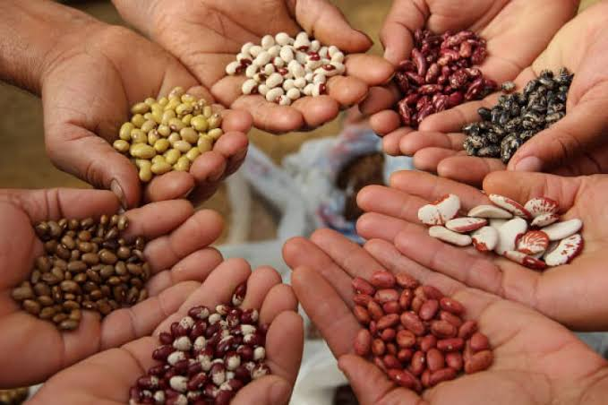
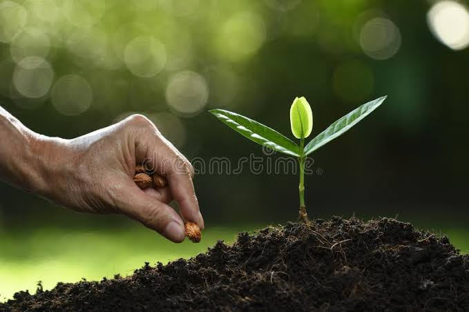
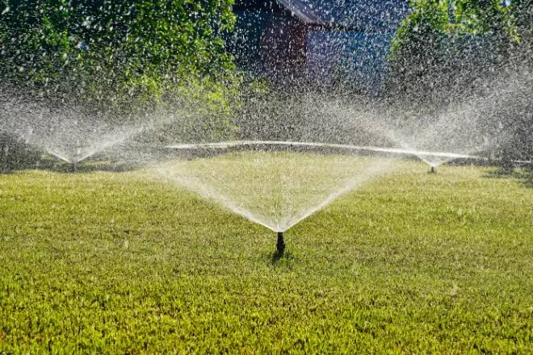
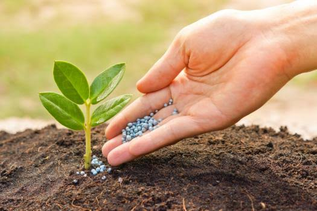
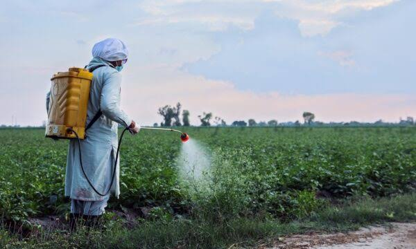
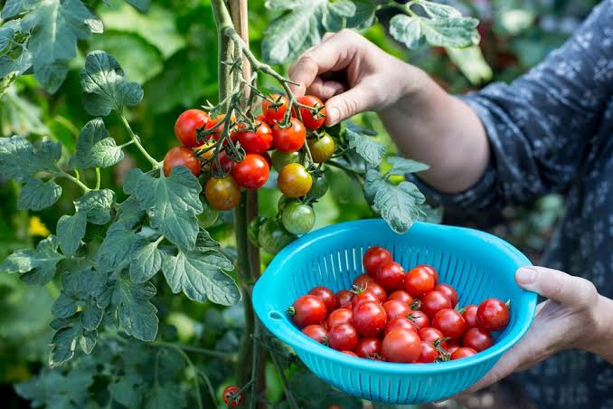

WELCOME TO CROP HUSBANDRY (CROP-HUSB)
WHY STUDY CROP HUSBANDRY?
Crop husbandry teaches students how to grow crops efficiently, increase food security, improve soil health, and earn better income through improved farming practices.
Introduction to Crop Husbandry
Crop husbandry is the science and art of growing crops profitably and sustainably. It involves all aspects of crop production from land selection and soil preparation through planting, cultivation, harvesting, and storage. The main goal is to achieve high productivity per unit of land while maintaining soil fertility and protecting the environment.
Good crop husbandry combines knowledge of plants, soil, water, and weather to turn farming into a science and a business.
Crop husbandry differs from crop farming in that it emphasizes the health of the crop and the soil, not just harvesting. Major crops cultivated include cereals (maize, rice, wheat), roots and tubers (cassava, yam, potato), legumes (groundnut, beans, soybean), and cash crops (cocoa, coffee, cotton). Success requires careful planning, good timing, and knowledge of crop requirements.
Soil Preparation
The foundation of crop production is good soil preparation. Before planting, soil must be cleared of weeds, stones, and debris. The soil is then ploughed or dug to break up the compacted surface, improve air infiltration, and allow roots to penetrate easily. This process is called primary cultivation.

Well-prepared soil is the first step toward a good crop and a good harvest.
After primary cultivation, secondary cultivation follows, where the soil is harrowed to achieve a fine, consolidated seed bed. The addition of organic matter such as compost or farmyard manure improves soil structure, water holding capacity, and nutrient content. Soil testing before preparation helps determine what amendments are needed.
Crop Varieties and Selection
Selecting the right crop variety is crucial for success. Different varieties have different requirements for temperature, rainfall, soil type, and day length. Some varieties are early maturing, while others take longer but yield more. Factors to consider include local climate, market demand, pest and disease resistance, and yield potential.

The right variety for your area and season ensures good yields and reduces crop failure risks.
Certified seeds are improved varieties that have been tested for high yield, good quality, and disease resistance. Using certified seeds instead of farm-saved seeds often increases production by 20-40%. However, seed quality depends on proper storage and quick germination testing before planting.
Planting Methods
Different crops require different planting methods. These include broadcasting (scattering seeds), drilling (placing seeds in lines), transplanting (moving seedlings to the field), and dibbling (placing individual seeds in holes). The choice depends on the crop, field size, and available labour and equipment.

Correct planting depth, spacing, and timing set the stage for uniform crop growth and good yields.
Planting depth is important; seeds planted too deep may fail to emerge, while seeds too shallow may dry out or be eaten by birds. Spacing determines plant population density, which affects competition for water, nutrients, and light. Proper spacing also makes weeding and harvesting easier.
Water Management for Crops
Water is essential for all crop activities including seed germination, plant growth, nutrient uptake, and cooling. The amount of water required varies by crop, soil type, and climate. Too little water causes wilting and poor yields, while too much causes waterlogging, disease, and root decay.

Water is life for crops, and its management determines the difference between harvest and loss.
In areas with sufficient rainfall, natural rainfall may be enough. However, in dry seasons or dry areas, irrigation is necessary. Irrigation methods include furrow irrigation, sprinkler irrigation, and drip irrigation. Farmers also use mulching and rainwater harvesting to conserve soil moisture and reduce water stress on crops.
Nutrient Management
Crops need essential nutrients to grow well. The main nutrients are nitrogen (N), phosphorus (P), and potassium (K), represented as NPK. Nitrogen supports leaf and stem growth, phosphorus promotes root development and flowering, and potassium improves fruit quality and disease resistance. Secondary nutrients include calcium, magnesium, and sulphur, while micronutrients include iron, zinc, manganese, boron, and copper.

Balanced nutrients create healthy, strong crops that resist stress and produce abundant harvests.
Nutrients can be supplied through organic manures such as compost and farmyard manure, green manure from legumes, or mineral fertilizers. The choice depends on cost, availability, and soil conditions. Organic matter also improves soil structure and water retention, making it valuable even when mineral fertilizers are used.
Weed, Pest and Disease Control
Weeds are unwanted plants that compete with crops for water, nutrients, and light. Common weeds include couch grass, morning glory, and various broad-leaved species. Pests such as armyworm, stem borer, and grasshopper feed on crop tissues and reduce yields. Diseases caused by fungi, bacteria, and viruses can kill plants or reduce their productivity.

Early detection and swift action prevent pest and disease problems from becoming disasters.
Control methods include cultural practices such as crop rotation, sanitation, and intercropping; biological control using natural enemies; mechanical control such as hand-picking; and chemical control using pesticides when necessary. Integrated Pest Management (IPM) combines several methods to minimize chemical use and protect the environment.
Harvesting and Post-Harvest
Harvesting is the process of collecting mature crops at the right time. Timing is important; too early and yields are low, too late and losses due to shattering or disease increase. Harvest methods vary by crop, ranging from hand harvesting to mechanical harvesting using combines and harvesters.

Proper harvesting and storage protect the farmer's investment and maintain grain or product quality for market.
After harvest, crops must be dried to safe moisture levels, cleaned, and properly stored in dry, cool conditions to prevent mold and pest damage. Good post-harvest handling preserves quality and prevents losses. The final step is marketing, where the farmer must understand market prices, packaging, and transport to get fair value for the produce.